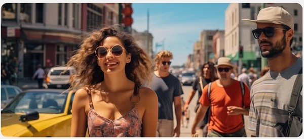

Something profound is shifting in how people meet, travel, and form enduring friendships across Kerala. Not romantically — socially. For years, the conventional tourism blueprint meant being funneled into crowded 40-seater tour buses, queued up for rushed 10-minute selfies at congested viewpoints, and retreating into sterile hotel rooms to scroll through Instagram and dating apps.
The apps that promised to fix modern isolation mostly made it worse — turning every interaction into a swipe, an algorithmic match, or an audition. But across South India, a much more grounded and exhilarating culture is emerging: activity-first road exploration across Kerala.
Less "here is my curated profile," and more "we're taking a luxury campervan up to the Munnar gap road at dawn to watch the mist lift — want to join the convoy?"
Why activity-first connection works better in Kerala
The fundamental flaw with modern social networks is that they start with identity — your photos, your bio, your follower count. This creates immense performance pressure before any real connection has taken place. You're essentially auditioning for someone's attention before you've ever stood together in the same mountain breeze.
Activity-first flips this dynamic completely. When you meet people on a sunrise climb up the 17 hairpin turns of the Western Ghats, or when you coordinate a convoy of campervans through the spice trails of Idukki, the shared physical environment does the heavy lifting.
You don't need a polished bio because your hands are busy, your eyes are on the road, and you're already doing something authentic together. The conversation starts naturally, the awkwardness vanishes, and the bond feels indelible because it happened in real life rather than through a glass screen.


The Open Highway as an Organic Living Room: The Luxor Paradigm
This very human need for shared momentum is what inspired Luxor's experiential Kerala fleet. We noticed that travel isn't merely about reaching a geographic pin on a map; the vehicle itself is a mobile living room, a sanctuary of shared playlists, storytelling, and spontaneous pitstops.
When friends load into a Toyota HiAce Luxury Campervan equipped with sleeping bunks and off-grid solar power, or when a convoy of Pajero Sport 4x4s and Toyota Innova Crystas embarks from Kochi International Airport, artificial barriers dissolve within hours:
- The Western Ghats Ascent: Cruising past the roaring Cheeyappara and Valara waterfalls as humid coastal air gives way to cool mountain mist.
- The Roadside Chayakkada Dynamic: Pulling over at a hillside wooden tea stall in Adimali for steaming cardamom tea and freshly fried pazham pori (Kerala banana fritters).
- Campsite Bonfires: Pitching camp beside tea estates in Munnar or the serene banks of Vembanad Lake in Alleppey, sharing grilled meals under starlit skies.
"True connection in Kerala isn't found through a screen; it is forged when the morning mist clears over the tea hills of Munnar, and you're handing a fresh cup of chai to the friend who navigated the hairpin climb with you." — Ryan Calloway, Sociological Travel Contributor
The Science of Shared Wilderness & Collective Dopamine
Sociological and neurological studies consistently affirm this truth: people who meet through shared outdoor activities report significantly higher trust, deeper empathy, and more durable friendships than those connecting online.
When you're drifting along the calm canal waters of Alleppey on a traditional wooden kettuvallam, watching Chinese fishing nets rise against a violet sunset, your brain enters a state of collective awe. Awe reduces self-focused cognition, lowers stress hormones, and primes people for profound vulnerability.
The Ultimate 5-Day Kerala Activity-First Route
-
1
Day 1: Kochi to Munnar High Ranges
Pick up your Pajero Sport 4x4 or Innova Crysta at Kochi Airport (COK). Climb through the Cheeyappara falls to Munnar Misty Hills Glamping Dome.
-
2
Day 2: Tea Trails & Campfire Networking
Dawn trek across the highest tea gardens in the world, followed by an evening campfire and local barbecue under the stars.
-
3
Day 3: Munnar to Thekkady Spice Sanctuary
Scenic mountain descent into Periyar wildlife sanctuary, bamboo rafting, and spice plantation exploration.
-
4
Day 4: Alleppey Backwaters Drift & Glamping
Check in at Alleppey Backwater Luxury Retreat. Sunset cruise on a traditional kettuvallam, canal kayaking, and fresh pearl spot (Karimeen) fish dinner.
-
5
Day 5: Coastal Sunset at Varkala Cliffs
Drive along the Arabian Sea coast, ending with a cliffside bonfire overlooking the breaking waves.
Start Your Shared Journey Across God's Own Country
Whether you are planning an intimate getaway, a road trip with old college companions, or organizing a 20-person corporate retreat, stop auditioning through screens. Step into the driver's seat, roll down the windows, and let the beauty of Kerala build the connections you've been looking for.
Experience Kerala with Luxor
Self-drive luxury SUVs, custom HiAce campervans, and curated nature stays in Munnar & Alleppey.